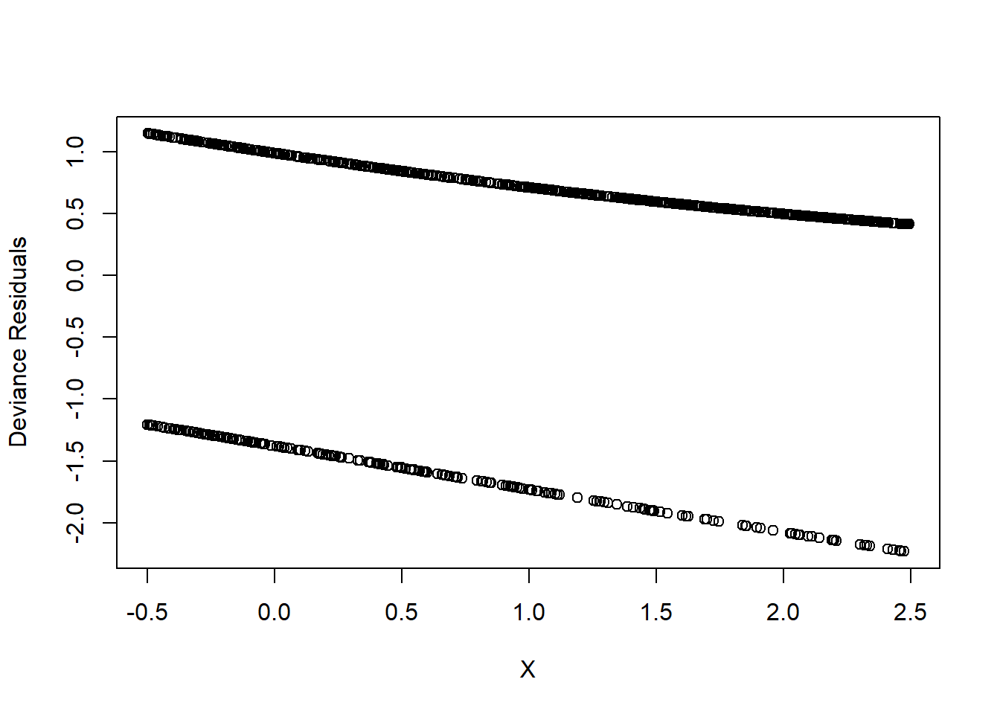
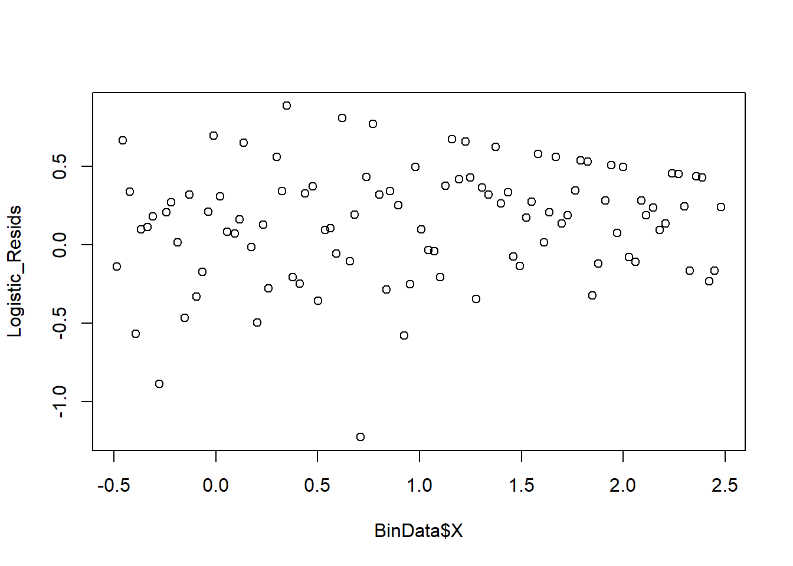

7.1 Logistic Regression
\[ p_i = f(\mathbf{x}_i ; \beta) = \frac{exp(\mathbf{x_i'\beta})}{1 + exp(\mathbf{x_i'\beta})} \]
Equivalently,
\[ logit(p_i) = log(\frac{p_i}{1+p_i}) = \mathbf{x_i'\beta} \]
where \(\frac{p_i}{1+p_i}\)is the odds.
In this form, the model is specified such that a function of the mean response is linear. Hence, Generalized Linear Models
The likelihood function
\[ L(p_i) = \prod_{i=1}^{n} p_i^{Y_i}(1-p_i)^{1-Y_i} \]
where \(p_i = \frac{\mathbf{x'_i \beta}}{1+\mathbf{x'_i \beta}}\) and \(1-p_i = (1+ exp(\mathbf{x'_i \beta}))^{-1}\)
Hence, our objective function is
\[ Q(\beta) = log(L(\beta)) = \sum_{i=1}^n Y_i \mathbf{x'_i \beta} - \sum_{i=1}^n log(1+ exp(\mathbf{x'_i \beta})) \]
we could maximize this function numerically using the optimization method above, which allows us to find numerical MLE for \(\hat{\beta}\). Then we can use the standard asymptotic properties of MLEs to make inference.
Property of MLEs is that parameters are asymptotically unbiased with sample variance-covariance matrix given by the inverse Fisher information matrix
\[ \hat{\beta} \dot{\sim} AN(\beta,[\mathbf{I}(\beta)]^{-1}) \]
where the Fisher Information matrix, \(\mathbf{I}(\beta)\) is
\[ \begin{aligned} \mathbf{I}(\beta) &= E[\frac{\partial \log(L(\beta))}{\partial (\beta)}\frac{\partial \log(L(\beta))}{\partial \beta'}] \\ &= E[(\frac{\partial \log(L(\beta))}{\partial \beta_i} \frac{\partial \log(L(\beta))}{\partial \beta_j})_{ij}] \end{aligned} \]
Under regularity conditions, this is equivalent to the negative of the expected value of the Hessian Matrix
\[ \begin{aligned} \mathbf{I}(\beta) &= -E[\frac{\partial^2 \log(L(\beta))}{\partial \beta \partial \beta'}] \\ &= -E[(\frac{\partial^2 \log(L(\beta))}{\partial \beta_i \partial \beta_j})_{ij}] \end{aligned} \]
Example:
\[ x_i' \beta = \beta_0 + \beta_1 x_i \]
\[ - \frac{\partial^2 \ln(L(\beta))}{\partial \beta^2_0} = \sum_{i=1}^n \frac{\exp(x'_i \beta)}{1 + \exp(x'_i \beta)} - [\frac{\exp(x_i' \beta)}{1+ \exp(x'_i \beta)}]^2 = \sum_{i=1}^n p_i (1-p_i) \\ - \frac{\partial^2 \ln(L(\beta))}{\partial \beta^2_1} = \sum_{i=1}^n \frac{x_i^2\exp(x'_i \beta)}{1 + \exp(x'_i \beta)} - [\frac{x_i\exp(x_i' \beta)}{1+ \exp(x'_i \beta)}]^2 = \sum_{i=1}^n x_i^2p_i (1-p_i) \\ - \frac{\partial^2 \ln(L(\beta))}{\partial \beta_0 \partial \beta_1} = \sum_{i=1}^n \frac{x_i\exp(x'_i \beta)}{1 + \exp(x'_i \beta)} - x_i[\frac{\exp(x_i' \beta)}{1+ \exp(x'_i \beta)}]^2 = \sum_{i=1}^n x_ip_i (1-p_i) \\ \]
Hence,
\[ \mathbf{I} (\beta) = \left[ \begin{array} {cc} \sum_i p_i(1-p_i) & \sum_i x_i p_i(1-p_i) \\ \sum_i x_i p_i(1-p_i) & \sum_i x_i^2 p_i(1-p_i) \end{array} \right] \]
Inference
Likelihood Ratio Tests
To formulate the test, let \(\beta = [\beta_1', \beta_2']'\). If you are interested in testing a hypothesis about \(\beta_1\), then we leave \(\beta_2\) unspecified (called nuisance parameters). \(\beta_1\) and \(\beta_2\) can either a vector or scalar, or \(\beta_2\) can be null.
Example: \(H_0: \beta_1 = \beta_{1,0}\) (where \(\beta_{1,0}\) is specified) and \(\hat{\beta}_{2,0}\) be the MLE of \(\beta_2\) under the restriction that \(\beta_1 = \beta_{1,0}\). The likelihood ratio test statistic is
\[ -2\log\Lambda = -2[\log(L(\beta_{1,0},\hat{\beta}_{2,0})) - \log(L(\hat{\beta}_1,\hat{\beta}_2))] \]
where
- the first term is the value fo the likelihood for the fitted restricted model
- the second term is the likelihood value of the fitted unrestricted model
Under the null,
\[ -2 \log \Lambda \sim \chi^2_{\upsilon} \]
where \(\upsilon\) is the dimension of \(\beta_1\)
We reject the null when \(-2\log \Lambda > \chi_{\upsilon,1-\alpha}^2\)
Wald Statistics
Based on
\[ \hat{\beta} \sim AN (\beta, [\mathbf{I}(\beta)^{-1}]) \]
\[ H_0: \mathbf{L}\hat{\beta} = 0 \]
where \(\mathbf{L}\) is a q x p matrix with q linearly independent rows. Then
\[ W = (\mathbf{L\hat{\beta}})'(\mathbf{L[I(\hat{\beta})]^{-1}L'})^{-1}(\mathbf{L\hat{\beta}}) \]
under the null hypothesis
Confidence interval
\[ \hat{\beta}_i \pm 1.96 \hat{s}_{ii}^2 \]
where \(\hat{s}_{ii}^2\) is the i-th diagonal of \(\mathbf{[I(\hat{\beta})]}^{-1}\)
If you have
- large sample size, the likelihood ratio and Wald tests have similar results.
- small sample size, the likelihood ratio test is better.
Logistic Regression: Interpretation of \(\beta\)
For single regressor, the model is
\[ logit\{\hat{p}_{x_i}\} \equiv logit (\hat{p}_i) = \log(\frac{\hat{p}_i}{1 - \hat{p}_i}) = \hat{\beta}_0 + \hat{\beta}_1 x_i \]
When \(x= x_i + 1\)
\[ logit\{\hat{p}_{x_i +1}\} = \hat{\beta}_0 + \hat{\beta}(x_i + 1) = logit\{\hat{p}_{x_i}\} + \hat{\beta}_1 \]
Then,
\[ logit\{\hat{p}_{x_i +1}\} - logit\{\hat{p}_{x_i}\} = log\{odds[\hat{p}_{x_i +1}]\} - log\{odds[\hat{p}_{x_i}]\} \\ = log(\frac{odds[\hat{p}_{x_i + 1}]}{odds[\hat{p}_{x_i}]}) = \hat{\beta}_1 \]
and
\[ exp(\hat{\beta}_1) = \frac{odds[\hat{p}_{x_i + 1}]}{odds[\hat{p}_{x_i}]} \]
the estimated odds ratio
the estimated odds ratio, when there is a difference of c units in the regressor x, is \(exp(c\hat{\beta}_1)\). When there are multiple covariates, \(exp(\hat{\beta}_k)\) is the estimated odds ratio for the variable \(x_k\), assuming that all of the other variables are held constant.
Inference on the Mean Response
Let \(x_h = (1, x_{h1}, ...,x_{h,p-1})'\). Then
\[ \hat{p}_h = \frac{exp(\mathbf{x'_h \hat{\beta}})}{1 + exp(\mathbf{x'_h \hat{\beta}})} \]
and \(s^2(\hat{p}_h) = \mathbf{x'_h[I(\hat{\beta})]^{-1}x_h}\)
For new observation, we can have a cutoff point to decide whether y = 0 or 1.
7.1.1 Application
library(kableExtra)
library(dplyr)
library(pscl)
library(ggplot2)
library(faraway)
library(nnet)
library(agridat)
library(nlstools)Logistic Regression
\(x \sim Unif(-0.5,2.5)\). Then \(\eta = 0.5 + 0.75 x\)
set.seed(23) #set seed for reproducibility
x <- runif(1000,min = -0.5,max = 2.5)
eta1 <- 0.5 + 0.75*xPassing \(\eta\)’s into the inverse-logit function, we get
\[ p = \frac{\exp(\eta)}{1+ \exp(\eta)} \]
where \(p \in [0,1]\)
Then, we generate \(y \sim Bernoulli(p)\)
p <- exp(eta1)/(1+exp(eta1))
y <- rbinom(1000,1,p)
BinData <- data.frame(X = x, Y = y)Model Fit
Logistic_Model <- glm(formula = Y ~ X,
family = binomial, # family = specifies the response distribution
data = BinData)
summary(Logistic_Model)
#>
#> Call:
#> glm(formula = Y ~ X, family = binomial, data = BinData)
#>
#> Deviance Residuals:
#> Min 1Q Median 3Q Max
#> -2.2317 0.4153 0.5574 0.7922 1.1469
#>
#> Coefficients:
#> Estimate Std. Error z value Pr(>|z|)
#> (Intercept) 0.46205 0.10201 4.530 5.91e-06 ***
#> X 0.78527 0.09296 8.447 < 2e-16 ***
#> ---
#> Signif. codes: 0 '***' 0.001 '**' 0.01 '*' 0.05 '.' 0.1 ' ' 1
#>
#> (Dispersion parameter for binomial family taken to be 1)
#>
#> Null deviance: 1106.7 on 999 degrees of freedom
#> Residual deviance: 1027.4 on 998 degrees of freedom
#> AIC: 1031.4
#>
#> Number of Fisher Scoring iterations: 4
nlstools::confint2(Logistic_Model)
#> 2.5 % 97.5 %
#> (Intercept) 0.2618709 0.6622204
#> X 0.6028433 0.9676934
OddsRatio <- coef(Logistic_Model) %>% exp
OddsRatio
#> (Intercept) X
#> 1.587318 2.192995Based on the odds ratio, when
- \(x = 0\) , the odds of success of 1.59
- \(x = 1\), the odds of success increase by a factor of 2.19 (i.e., 119.29% increase).
Deviance Tests
\[ H_0: \text{No variables are related to the response (i.e., model with just the intercept)} \\ H_1: \text{at least one variable is related to the response} \]
Test_Dev = Logistic_Model$null.deviance - Logistic_Model$deviance
p_val_dev <- 1-pchisq(q = Test_Dev, df = 1)Since we see the p-value of 0, we reject the null that no variables are related to the response
Deviance residuals
Logistic_Resids <- residuals(Logistic_Model, type = "deviance")
plot(
y = Logistic_Resids,
x = BinData$X,
xlab = 'X',
ylab = 'Deviance Resids'
)
However, this plot is not informative. Hence, we can can see the residudals plots that are grouped into bins based on prediction values.
plot_bin <- function(Y,
X,
bins = 100,
return.DF = FALSE) {
Y_Name <- deparse(substitute(Y))
X_Name <- deparse(substitute(X))
Binned_Plot <- data.frame(Plot_Y = Y, Plot_X = X)
Binned_Plot$bin <-
cut(Binned_Plot$Plot_X, breaks = bins) %>% as.numeric
Binned_Plot_summary <- Binned_Plot %>%
group_by(bin) %>%
summarise(
Y_ave = mean(Plot_Y),
X_ave = mean(Plot_X),
Count = n()
) %>% as.data.frame
plot(
y = Binned_Plot_summary$Y_ave,
x = Binned_Plot_summary$X_ave,
ylab = Y_Name,
xlab = X_Name
)
if (return.DF)
return(Binned_Plot_summary)
}
plot_bin(Y = Logistic_Resids,
X = BinData$X,
bins = 100)
We can also see the predicted value against the residuals.
Logistic_Predictions <- predict(Logistic_Model, type = "response")
plot_bin(Y = Logistic_Resids, X = Logistic_Predictions, bins = 100)
We can also look at a binned plot of the logistic prediction versus the true category
NumBins <- 10
Binned_Data <- plot_bin(
Y = BinData$Y,
X = Logistic_Predictions,
bins = NumBins,
return.DF = TRUE
)
Binned_Data
#> bin Y_ave X_ave Count
#> 1 1 0.5833333 0.5382095 72
#> 2 2 0.5200000 0.5795887 75
#> 3 3 0.6567164 0.6156540 67
#> 4 4 0.7014925 0.6579674 67
#> 5 5 0.6373626 0.6984765 91
#> 6 6 0.7500000 0.7373341 72
#> 7 7 0.7096774 0.7786747 93
#> 8 8 0.8503937 0.8203819 127
#> 9 9 0.8947368 0.8601232 133
#> 10 10 0.8916256 0.9004734 203
abline(0, 1, lty = 2, col = 'blue')
Formal deviance test
Hosmer-Lemeshow test
Null hypothesis: the observed events match the expected evens
\[ X^2_{HL} = \sum_{j=1}^{J} \frac{(y_j - m_j \hat{p}_j)^2}{m_j \hat{p}_j(1-\hat{p}_j)} \]
where
- within the j-th bin, \(y_j\) is the number of successes
- \(m_j\) = number of observations
- \(\hat{p}_j\) = predicted probability
Under the null hypothesis, \(X^2_{HLL} \sim \chi^2_{J-1}\)
HL_BinVals <-
(Binned_Data$Count * Binned_Data$Y_ave - Binned_Data$Count * Binned_Data$X_ave) ^
2 /
Binned_Data$Count * Binned_Data$X_ave * (1 - Binned_Data$X_ave)
HLpval <-
pchisq(q = sum(HL_BinVals),
df = NumBins,
lower.tail = FALSE)
HLpval
#> [1] 0.9999989Since p-value = 0.99, we do not reject the null hypothesis (i.e., the model is fitting well).